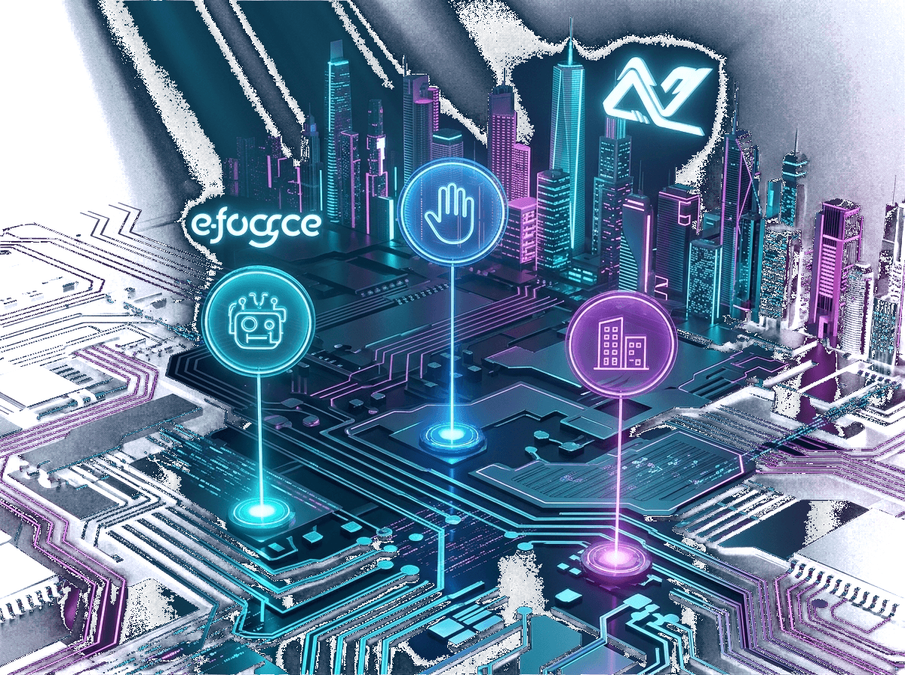
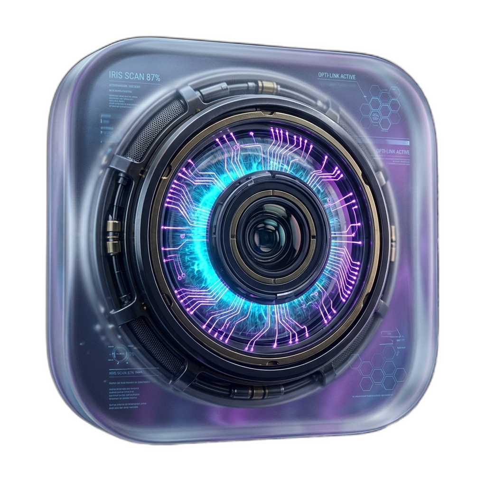
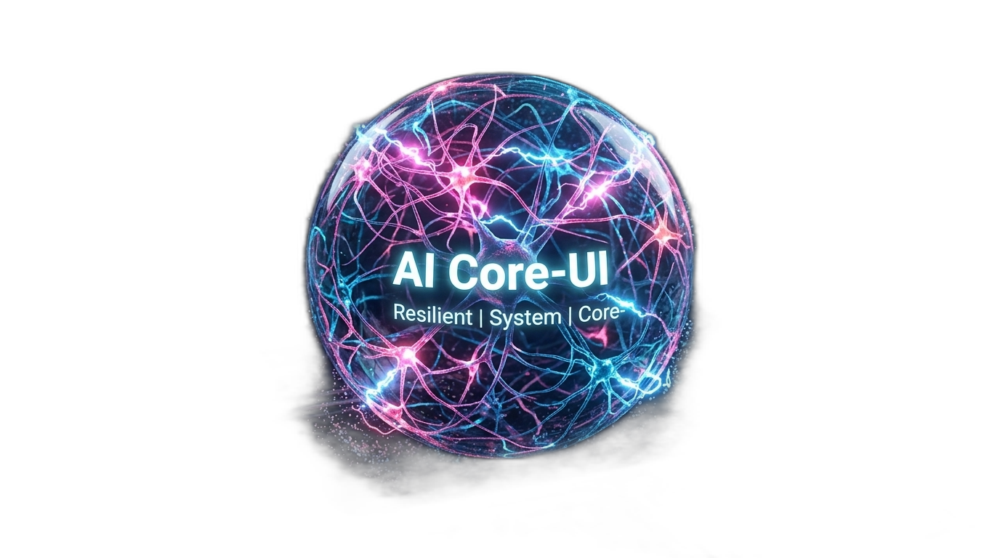
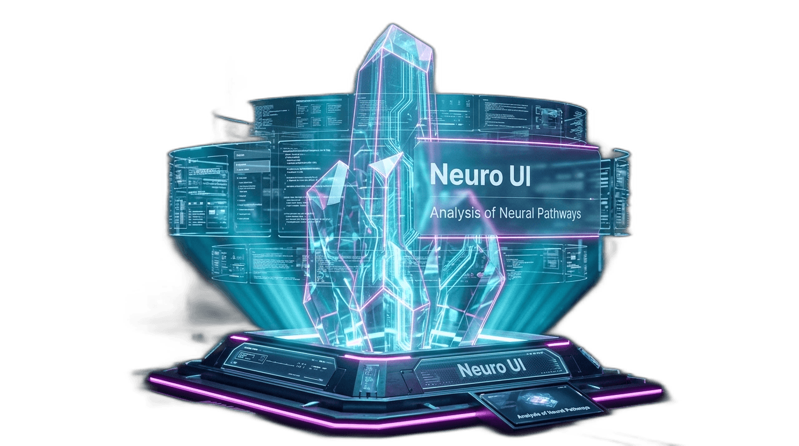

Autonomous Systems
& Real-Time Spatial Runtimes
Principal Distributed Systems Architect engineering high-throughput WebGPU spatial runtimes, zero-latency state synchronization across 45,000 distributed nodes, and hardware-accelerated cognitive surfaces.
Architectural Mission
Bridging spatial 3D computer graphics with fault-tolerant distributed protocol engineering.
With over 9 years of core infrastructure engineering, I specialize in building systems that operate at the physical limit of silicon and network physics. My work spans custom WebGPU compute shaders, real-time spatial consensus protocols, and low-latency microsecond distributed state machines.
I reject bloated abstractions and speculative architectural layers. Instead, I practice data-oriented design: mechanical sympathy with CPU cache lines, zero-copy deserialization, and mathematically verified consensus boundaries that ensure flawless reliability under peak planetary loads.
01. Mechanical Sympathy
Every byte of memory allocation must justify its existence. Optimizing for CPU L1/L2 caches and SIMD instructions before touching application logic.
02. Deterministic State
Distributed clusters must remain mathematically deterministic across failure cascades, split-brain network partitions, and clock drifts.
03. Weightless Spatial UI
Visual frontends should run at 120fps with sub-millisecond gesture input response and hardware-accelerated shader passes.
Skills & Ecosystem Matrix
A rigorous mastery of low-level systems languages, cloud infrastructure, and 3D graphics.
Systems & Runtimes
Low-level memory-safe engineering with zero-cost abstractions and sub-millisecond asynchronous scheduling.
3D & Spatial Compute
Hardware-accelerated rendering pipelines, compute shaders, and real-time volumetric raymarching.
Distributed Cloud
High-availability global orchestrations, edge networks, and cryptographic verification pipelines.
Selected Production Systems
Audited open-source repositories and high-throughput production runtimes deployed worldwide.

Aetherial Spatial Core Runtime
Decentralized real-time WebGPU spatial rendering engine running dynamic volumetric particle swarms with distance-threshold raymarching and sub-millisecond frame delivery. Eliminates main-thread garbage collection pauses via zero-copy shared ArrayBuffers.

Iris Spatial Tracking Engine
Sub-pixel 6-DoF optical gaze tracking running locally at 120Hz on low-power edge silicon with zero remote cloud dependency.

Synapse Cluster Mesh HUD
Sub-millisecond telemetry visualizer streaming node health, memory topologies, and failover states across 45,000 distributed cognitive nodes.

Krypton Zero-Knowledge Proof Pipeline
High-throughput cryptographic validator verifying recursive SNARK proofs in under 12ms with audited mathematical isolation and zero secret leakage across untrusted adversarial nodes.
Career Chronology & Impact
Leading systems architecture and performance engineering across frontier technology firms.
Principal Systems Architect
2023 — PRESENTDirecting core architectural evolution of the real-time spatial simulation platform. Leading an elite engineering team of 14 systems and shader specialists.
- Pioneered distributed WebGPU compute pipeline cutting simulation roundtrip latency from 45ms down to 3.2ms.
- Designed custom zero-copy memory ring buffers processing 2.4M incoming telemetry events per second.
- Authored patent-pending spatial state consensus algorithm deployed across 45,000 edge nodes globally.
Staff Distributed Systems Engineer
2020 — 2023Engineered mission-critical cloud telemetry backbones serving over 18 million active developer requests daily with five-nines (99.999%) availability.
- Re-architected core Kafka ingestion pipelines in Rust, reducing cloud infrastructure spend by $180,000 monthly.
- Eliminated GC tail-latency spikes in JVM microservices by migrating high-throughput ingress proxies to Go.
- Mentored 20+ senior engineers and established company-wide RFC architectural standards.
Senior Infrastructure Engineer
2017 — 2020Developed cryptographic validation layers and consensus gossip protocols for distributed peer-to-peer ledger networks.
- Implemented multi-threaded cryptographic signature verification pipeline accelerating block throughput by 340%.
- Hardened network ingress layers against DDOS amplification attacks, maintaining zero downtime during adversarial audits.
Credentials & Education
Rigorous foundational grounding in computer science and industry-standard security certs.
Specialized in Distributed Operating Systems, High-Performance Parallel Computing, and Asynchronous Concurrency Runtimes. Thesis: "Zero-Copy Memory Synchronization in Heterogeneous GPU Clusters" (Advised by Distributed Systems Group).
Graduated Magna Cum Laude. Dean's Honors List all semesters. Capstone: Autonomous Distributed Sensor Swarm with Fault-Tolerant Mesh Routing over Low-Bandwidth Radios.
Verified mastery of planetary-scale multi-region fault tolerance, hybrid cloud security architectures, and automated disaster recovery failover networks.
Validated proficiency in container storage interfaces (CSI), custom resource definitions (CRDs), eBPF networking, and air-gapped cluster hardening.
Engineering Dossiers
In-depth technical writeups and case studies read by over 85,000 systems engineers.
Zero-Copy Memory Serialization in WebGPU Pipelines
How avoiding serialization overhead in SharedArrayBuffers unlocked 120fps physics simulations across millions of interactive particles.
Scaling Consensus to 45,000 Nodes with Sub-Millisecond Jitter
A deep dive into gossip protocol optimizations, clock skew mitigation, and UDP ring buffer tuning in adversarial networks.
Procedural Volumetric Raymarching on Low-Power Silicon
Raymarching signed distance fields (SDFs) with screen-space ambient occlusion running within a 4W mobile thermal envelope.
Initiate Communications
Open for strategic architecture advisory, principal contracts, and foundation building.